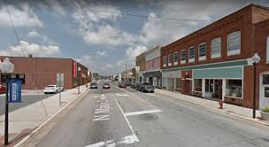

About Norwood
Norwood is a small village located in St. Lawrence County in northern New York. It is known for its quiet atmosphere and close-knit community.
The town is surrounded by natural beauty, including rivers and forests, making it a great place for outdoor activities like fishing and hiking.
Attractions

- Norwood Village Green Concert Series
- Raquette River
- Local parks and trails
- Nearby Potsdam attractions
Quick Facts
| Category | Information |
|---|---|
| Population | Approx. 1,500 |
| County | St. Lawrence County |
| State | New York |
| Known For | Concert series and small-town charm |
Top Sights
- Norwood Village Green
- Raquette River waterfront
- Local walking trails
- Downtown shops